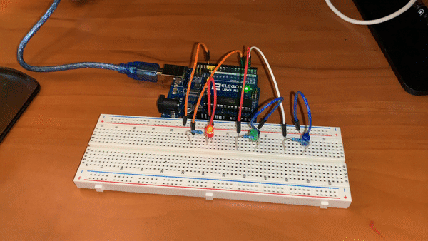
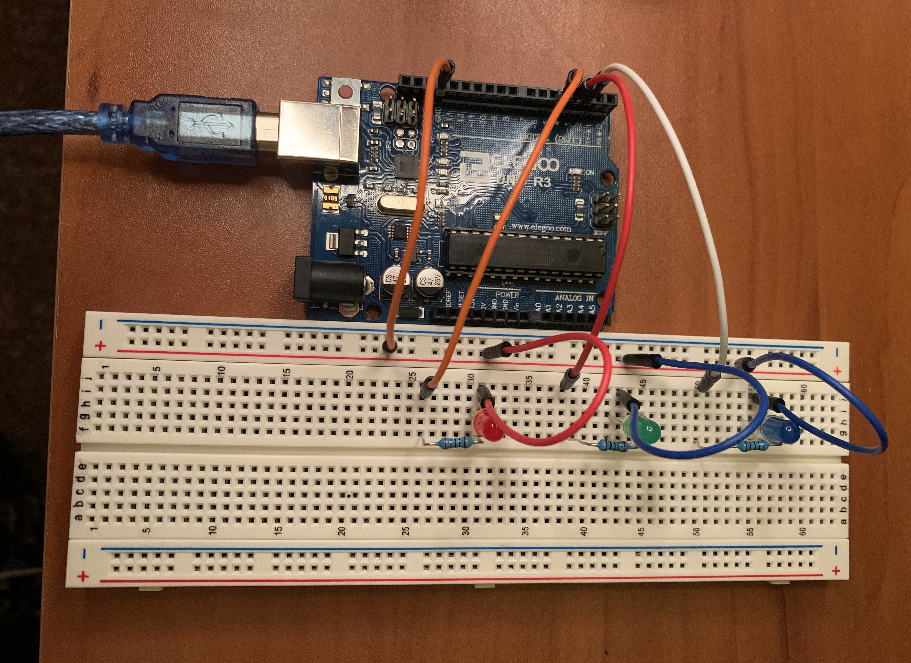

Here is all the documentation for assignment 1. For this assignment I have three blinking LED's, all blinking for different lengths.
These are the schematics for my three LEDs, which were plugged into pins 2, 3, and 4. The LED's
`

void setup() { //initializes LED variables
pinMode(4, OUTPUT); //Red in pin 4
pinMode(3, OUTPUT); //Green in pin 3
pinMode(2, OUTPUT); //Blue in pin 2
}
//
void loop() { //loops through LED patterns
digitalWrite(4, HIGH); //red on
digitalWrite(3, LOW); //green off
digitalWrite(2, LOW); //blue off
delay(1000); //one second delay
digitalWrite(4, LOW); //red off
digitalWrite(3, HIGH); //green on
digitalWrite(2, LOW); //blue off
delay(500); //half second delay
digitalWrite(4, HIGH); //red on
digitalWrite(3, LOW); //green off
digitalWrite(2, HIGH); // blue on
delay(250); // quarter second delay
}